A visual guide to how they work, where to find them, and how to use them
There are 8 fixed audio tones, evenly spaced ~6.25 Hz apart. Each symbol picks one tone. That's 3 bits per symbol (2³ = 8).
The "G" in GFSK means Gaussian — instead of jumping between tones, the frequency slides smoothly through a Gaussian filter. This keeps the signal narrow (~50 Hz) and prevents splatter into adjacent frequencies.
Every symbol lasts exactly 0.16 seconds. A 15-second FT8 transmission is 79 symbols, carrying a 77-bit message plus sync bits. The entire contact — both callsigns, a grid square, and a signal report — fits in those 77 bits.
Because the transmit window is fixed and clock-synced, the decoder knows exactly when to look. It can integrate the full 15 seconds of signal coherently, which is why FT8 works at -21 dB — well below the noise floor.
Instead of sending data on one tone at a time, OFDM sends data on dozens or hundreds of tones simultaneously. Each tone is called a subcarrier.
Each subcarrier is spaced so they're orthogonal — they don't interfere with each other even though they overlap. This is the mathematical trick that makes OFDM work. The peak of one subcarrier lands exactly at the zero-crossing of its neighbors.
Every subcarrier independently carries a few bits using phase shifts (like PSK). With hundreds of subcarriers transmitting in parallel, the total data rate is very high — Rattlegram sends 170 bytes in 1.4 seconds.
A sync preamble (Schmidl-Cox in Rattlegram) is sent first so the receiver knows exactly where the data starts and can correct for frequency offset. Then data symbols follow, each encoding all subcarriers at once via an inverse FFT.
| Mode | Type | Speed | Bandwidth | Error Correction | Conversation Style | Year |
|---|---|---|---|---|---|---|
| CW | On/off keying | 5-40 WPM | ~100 Hz | None | Freeform QSO | 1844 |
| RTTY | FSK | 45-100 baud | ~250 Hz | None | Freeform QSO | 1930s |
| PSK31 | BPSK | 31.25 baud | ~60 Hz | None | Freeform QSO | 1998 |
| QPSK31 | QPSK | 31.25 baud | ~60 Hz | Viterbi | Freeform QSO | 1998 |
| PSK63 | BPSK/QPSK | 62.5 baud | ~125 Hz | Optional | Freeform QSO | ~2000 |
| Olivia | MFSK | ~30 WPM | 125-2000 Hz | FEC | Freeform QSO | 2005 |
| DominoEX | MFSK | ~70 WPM | ~200 Hz | FEC | Freeform QSO | 2004 |
| MT63 | OFDM | ~100 WPM | 500-2000 Hz | Interleaved FEC | Keyboard QSO | 1998 |
| FT8 | 8-GFSK | Fixed 15s | ~50 Hz | LDPC | Structured exchange | 2017 |
| FT4 | 4-GFSK | Fixed 7.5s | ~80 Hz | LDPC | Structured exchange | 2019 |
| JS8Call | 8-GFSK | Fixed 15s | ~50 Hz | LDPC | Freeform messaging | 2018 |
| WSPR | 4-FSK | Fixed 2 min | ~6 Hz | FEC | Beacon only | 2008 |
| NAVTEX | FSK | 100 baud | ~340 Hz | FEC (SITOR-B) | Maritime broadcast | 1977 |
| Rattlegram | OFDM | 170 B/1.4s | ~1.6 kHz | Polar codes | Burst messages | 2022 |
| VARA | OFDM | Up to 8.5 kbps | 500-2300 Hz | FEC + ARQ | Data transfer | 2017 |
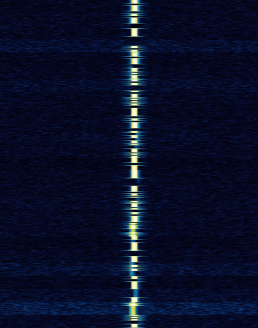
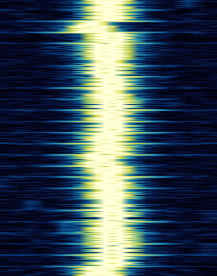
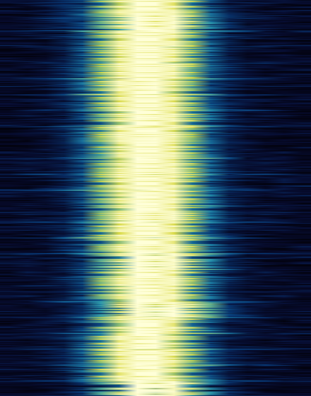
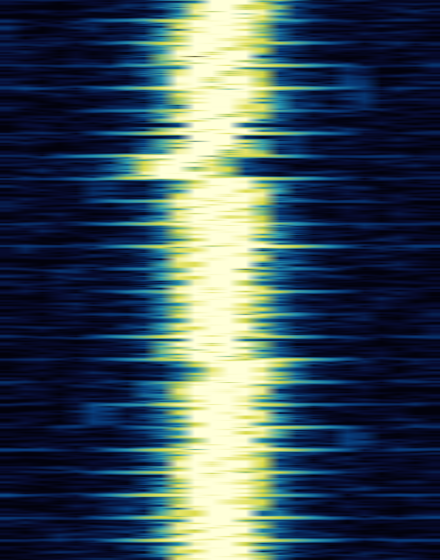
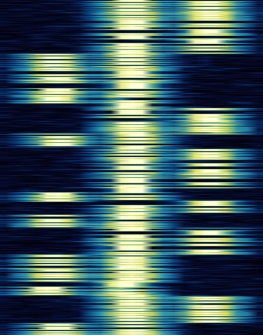
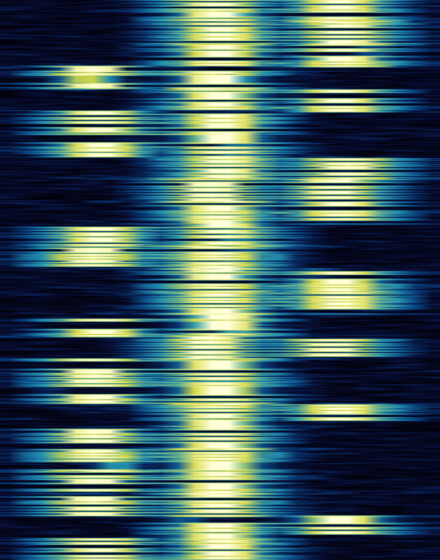
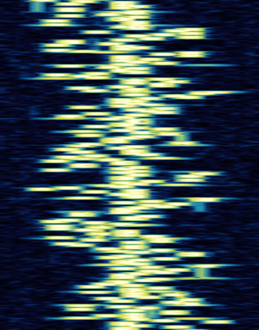
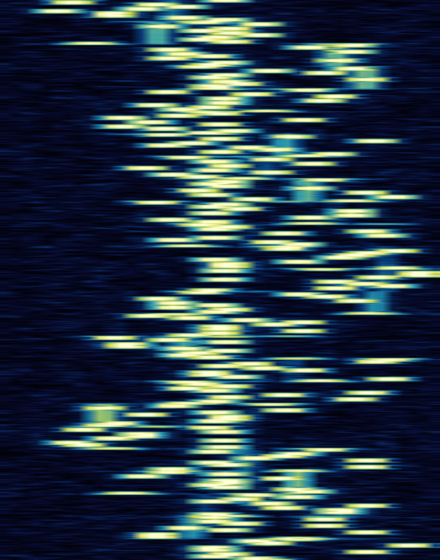
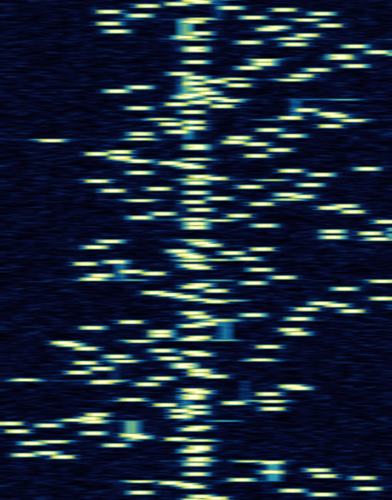
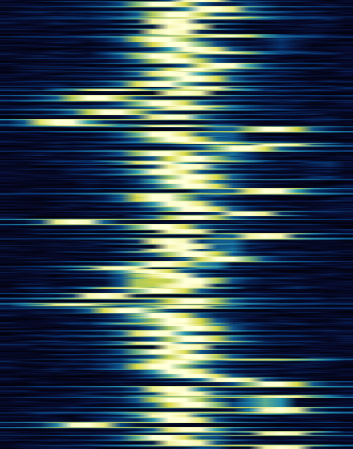
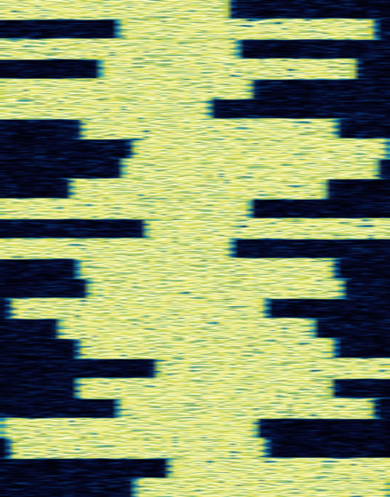
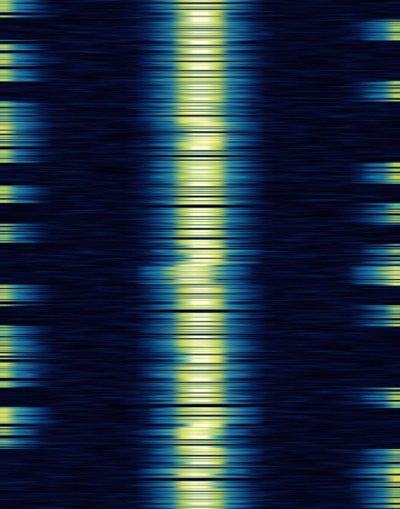
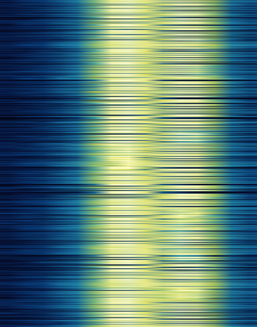
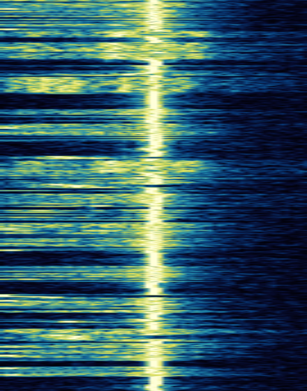
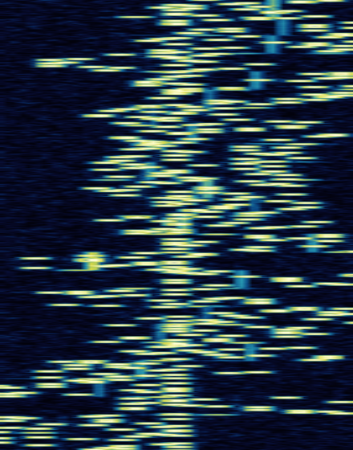
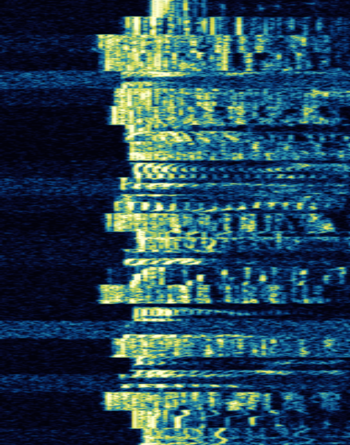
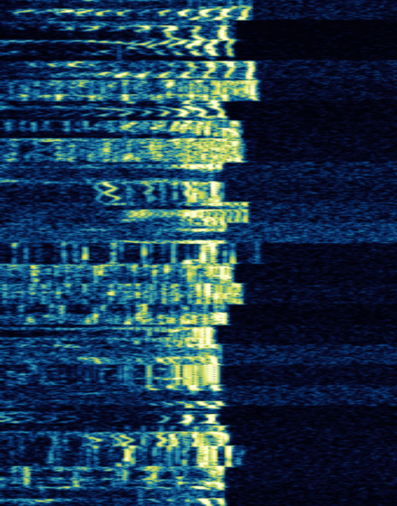
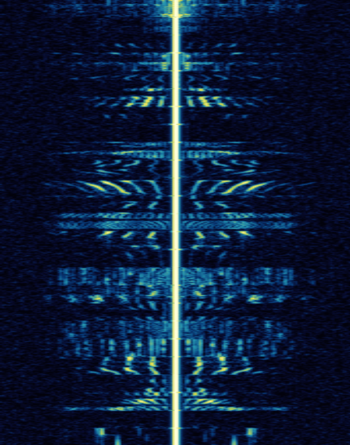
The oldest digital mode. A single tone switched on and off. Nothing simpler, nothing narrower.
Excels at: Cutting through noise with the narrowest possible signal. Works with the simplest equipment — you can do CW with a battery, a wire, and a switch. The go-to for QRP, contesting, and DX.
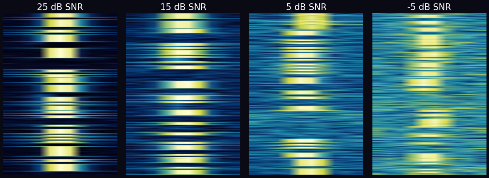
Panoradio HF dataset — dits and dahs become harder to distinguish as noise increases
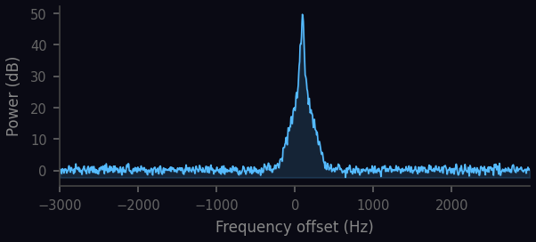
Extremely narrow — all energy concentrated in a single tone
Two audio tones alternating — one for mark, one for space. The teletype of the airwaves since the 1930s.
Excels at: Contesting. RTTY contests (CQ WW RTTY, RTTY Roundup) are some of the most popular events on the HF bands. Simple, robust, universally supported.
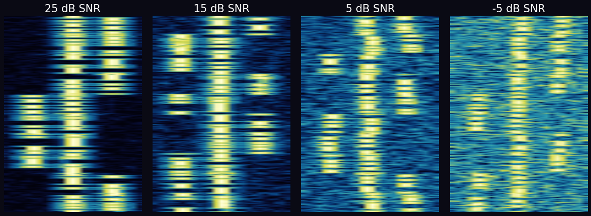
The characteristic two-tone pattern becomes harder to separate from noise at lower SNR
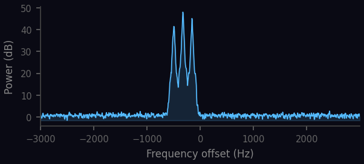
Two distinct peaks = mark and space frequencies, ~170 Hz apart
A single tone that flips its phase to carry data. The thinnest signal you'll see on a waterfall.
Excels at: Low-power keyboard-to-keyboard conversations. At ~60 Hz wide, you can fit dozens of PSK31 signals in the bandwidth of one SSB voice signal. The original QRP digital mode.
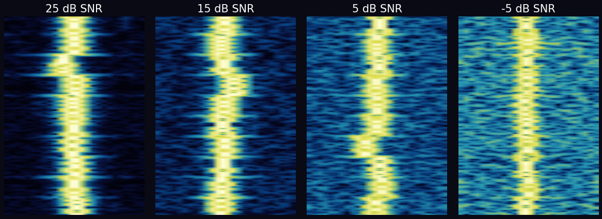
The thin trace remains surprisingly visible even at low SNR thanks to its extreme narrowness
Structured 15-second exchanges that work below the noise floor. The most popular digital mode on HF today.
Excels at: Making contacts when conditions are marginal. Decodes at -21 dB SNR — signals you literally cannot hear. Tune to 14.074 on any day and you'll see dozens of stations worldwide.
FT8's faster cousin — same structured messages in half the time. Built specifically for digital contesting.
Excels at: Contest rate. Twice as many QSOs per hour as FT8. When the band is wide open and speed matters more than pulling weak signals out of the noise.
FT8's engine repurposed for real conversations. Type what you want — not just callsigns and signal reports.
Excels at: Freeform messaging at weak-signal levels. Keyboard-to-keyboard chat that works when SSB, PSK, and even CW can't get through. Store-and-forward relaying through other stations.
A symphony of tones hopping across the band. Designed for the worst HF conditions where other modes fail.
Excels at: Getting through when the band is noisy, fading, and full of interference. The error correction and wide frequency spread make it extraordinarily robust against QRM and QSB.
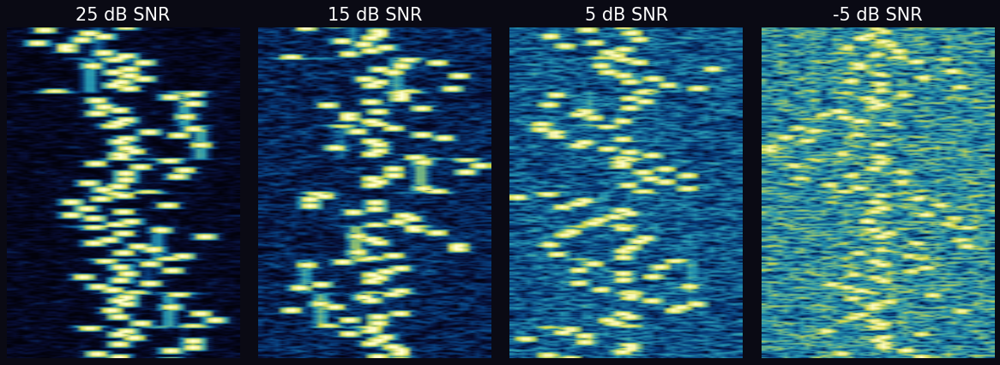
The multi-tone hopping pattern is remarkably resilient — individual tones still visible at low SNR
A fast, nimble frequency-hopper. Encodes data in the difference between successive tones, making it robust to frequency drift.
Excels at: Keyboard-to-keyboard chat on HF with good throughput. Handles ionospheric Doppler shift gracefully because it uses differential encoding — only the change in frequency matters, not the absolute value.
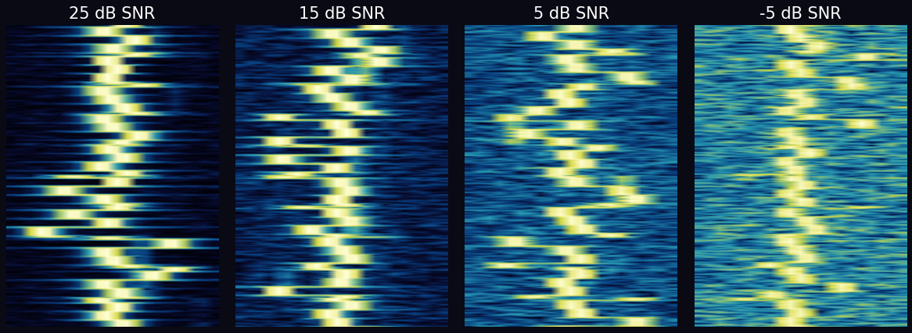
The hopping pattern holds up well as noise increases
A wide, resilient wall of tones. 64 subcarriers transmitting in parallel like a mini-OFDM system — years before WiFi.
Excels at: Keyboard-to-keyboard chat in high-noise environments. The wide bandwidth and interleaving make it nearly impervious to impulse noise and narrowband interference.
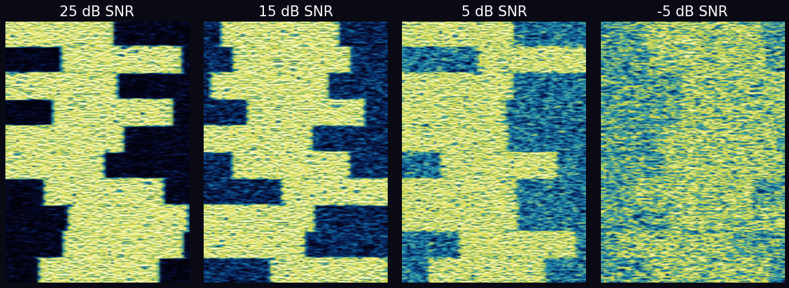
The wide OFDM band is remarkably resilient — individual carriers still decodable at very low SNR
Maritime safety broadcasts on long-wave. Weather warnings, navigational hazards, and search-and-rescue alerts delivered automatically to ships at sea.
Excels at: Reliable one-way broadcast of safety information. Operates on 518 kHz (international) and 490 kHz (national). Every SOLAS-class vessel must carry a NAVTEX receiver.
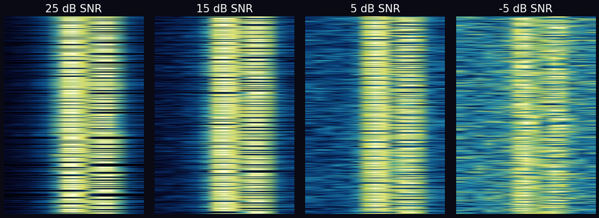
FEC allows decoding at much lower SNR than raw RTTY
Whisper-quiet beacons. Transmits your callsign and location so others can map propagation worldwide.
Excels at: Propagation research. Decodes at -28 dB SNR with only 200 milliwatts. Leave it running and wake up to a map of everywhere your signal was heard overnight.
The speed king of HF data. Adapts its modulation in real-time to send data as fast as the band allows.
Excels at: Sending actual data — emails, files, position reports — over HF radio via Winlink. The fastest way to move data through an HF channel. Essential for emergency communications.
A burst of data across many tones at once. Send a 170-byte text message in under 2 seconds — even phone-to-phone over a speaker.
Excels at: Quick text messages on VHF/UHF FM. No special interface needed — hold your phone up to the radio speaker. Open source and works on Android and iOS.
| I want to... | Use this |
|---|---|
| Make a quick contact, log it, move on | FT8 |
| Have a real conversation via weak signals | JS8Call |
| Chat keyboard-to-keyboard | PSK31 or CW |
| Contest and make lots of contacts fast | FT4, RTTY, or CW |
| Get through when the band is terrible | Olivia, MT63, or JS8Call |
| Send email over HF radio | VARA + Winlink |
| Monitor propagation | WSPR |
| Send a quick text on FM | Rattlegram |
| Use minimal equipment | CW |
| Fast keyboard chat with drift tolerance | DominoEX |
Waterfall diagrams, audio samples, and SNR comparisons are generated from the Panoradio HF Radio Signal Classification Dataset by Stefan Scholl (2019).